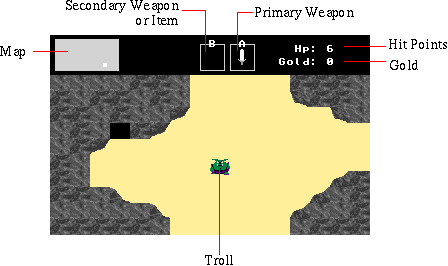

![[Troll Bridge]](title.gif)
Screen Layout

The map displays where the character is in the world. The white square shows the characters current position. The primary weapon is activated by the A button. The secondary weapon can be used by pressing the B button. Select changes to the next secondary weapon. Hit points are the characters health. Gold coins are sometimes dropped after killing an opponent and can be used to purchase items.
Sword Fighting
Mastering sword fighting is an important skill in Troll Bridge. The troll character is left handed so attacks don't come from the center. Also while the blade is extending and retracting, the character cannot move. Although later weapons such as the enchanted sword allows attacking from a distance, this only works when at full health. It is best to practice early on with the sword while the opponents are weak.